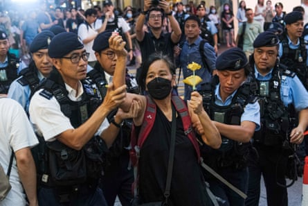
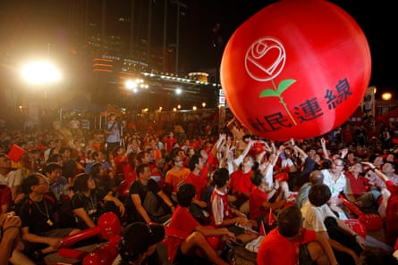
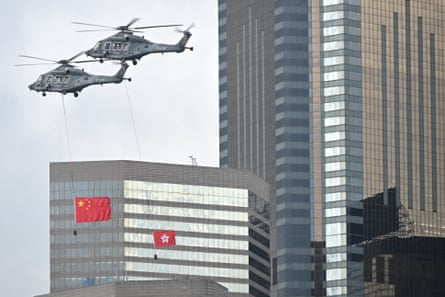
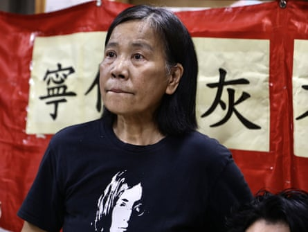

I n a cramped, dark office, in front of a wall adorned by some misshapen shelves, faded photographs, and a single fan battling against the summer heat, Hong Kong’s last active pro-democracy party admitted defeat.
Behind them, a sticky-taped banner declared: “We’d rather be ashes than dust.”
Dozens of reporters had crammed inside this room on Sunday to hear the announcement that many knew was coming. The League of Social Democrats (LSD), an almost 20-year-old opposition party, was officially disbanding.
The disbandment of the LSD on Sunday marks a success for Hong Kong authorities. Five years ago on Tuesday , authorities in Beijing and Hong Kong imposed a sweeping national security law (NSL) that critics immediately said would be used as a weapon to demolish institutional opposition in the city.
The LSD held out longer than most, but the shuttering of the party has shown just how comprehensively the law worked.
They had no choice “in the face of immense political pressure”, the party’s chair, Chan Po-ying, said in a statement. “We have endured hardships of internal disputes and the near-total imprisonment of our leadership while witnessing the erosion of civil society, the fading of grassroots voices, the omnipresence of red lines and the draconian suppression of dissent.”
She added: “We leave with heavy hearts, and with an ache in our conscience, knowing we will not be the last to fall. The terrain ahead is even more treacherous.”
Chan Po-ying, an activist and leader of League of Social Democrats, is detained by police officers at Causeway Bay near Victoria Park in June 2023.Photograph: Sawayasu Tsuji/Getty Images
The LSD was founded in 2006 as a more radical arm of the pro-democracy camp, pushing the leftwing issues beyond their more moderate stable mates the Civic party (which disbanded in 2023 ), and the Democratic party (which began dissolution processes in February). It advocated not just for the city’s political freedom and autonomy but also the rights of worker and other grassroots causes.
“Guided by the principle of ‘standing unflinchingly with the vulnerable’, we amplified silenced voices and exposed unjust policies and wasteful white elephant projects,” the LSD said in its farewell social media post.
By mid 2020, there was a tense calm in Hong Kong. The mass street protests that swamped the city in 2019 had mostly stopped , with everyone ordered inside by the Covid-19 pandemic. More than 9,000 people involved in the pro-democracy protests had been arrested, and police were using new pandemic laws to break up fresh efforts at activism. But walking around the quiet streets in those months, there were still signs of resistance – graffitied stairs under a bridge, Lennon Walls of sticky notes plastered across university campuses. People still spoke in anger with relative freedom. An election on the horizon promised hope.
Then came a new tool. Beijing sidelined Hong Kong authorities and announced in May 2020 that it would impose its own law on the city.
Supporters of the League of Social Democrats play with a balloon during a campaign rally in Hong Kong in 2008.Photograph: Bobby Yip/Reuters
Within a year, Guardian analysis found at least 128 people – including minors, politicians and journalists – had been arrested by the police’s national security department, some of them multiple times, for acts including possession of a protest flag.
A new report by Amnesty International, published this week, found that between 30 June 2020 and 17 June 2025, 332 people were arrested for “cases involving suspected acts or activities that “endanger national security” under “all relevant laws”, which included the NSL and a follow-up domestic law that echoed and bolstered the NSL. It said 189 had been charged, including 91 under the NSL, of which 76 were convicted.
It said 85% of concluded cases involved “only legitimate expression that should not have been criminalised”, that courts denied bail in 89% of national security cases; and that pre-trial detention stretched to an average of 11 months. This showed that the law breached international human rights law and standards, the report said.
‘Criminalising the desire for freedom’
Perhaps the most high-profile trial was that of media mogul Jimmy Lai . Lai, 78, was arrested and charged alongside executives at the media company he founded, accused of using the Apple Daily newspaper to publish seditious articles, and conspiring to commit foreign collusion by asking other countries to impose sanctions. Having already spent more than four years in solitary confinement, Lai is facing life in prison if found guilty.
“Hong Kong is now a place where some of its bravest and brightest citizens are sitting in jail,” Lai’s son Sebastien said. “This has nothing to do with national security and everything to do with criminalising the desire for freedom.”
The Chinese and Hong Kong flags are flown by helicopters over Victoria Harbour during a flag-raising ceremony to mark the 28th anniversary of Hong Kong’s handover from Britain to China.Photograph: Peter Parks/AFP/Getty Images
The impact of the law isn’t just on those who have been arrested. The vagueness of its terms has cast a well-documented chill on almost every sector of the city. It has smothered everyday discussion of politics, society, school curriculums , and the contents of books and mobile games , with the threat that to do so could break the law.
It has underwritten an era of broader political repression. Electoral reforms have ensured that only pro-Beijing “patriots” can run in that promised election. Foreign judges are leaving Hong Kong’s benches, with several citing the new environment . Media outlets have closed , moved overseas or faced frequent “random” tax audits and investigations. Artists have fled after appearing on blacklists. Meanwhile, security officials have now turned their sights on “soft resistance”.
Maya Wang , associate China director at Human Rights Watch, said: “In just five years, the Chinese government has extinguished Hong Kong’s political and civil vibrancy and replaced it with the uniformity of enforced patriotism.”
The Hong Kong government rejects all criticism. It praises the law and those who wield it for bringing order back to a city that was in chaos. It has accused Amnesty of “gross distortion of the reality” with its report, and of showing “complete disregard of the indisputable positive effects brought about” by the new laws in the past five years.
Emily Lau is one of a few public political figures still speaking out. Lau served as a legislator for a quarter of a century until 2016, and is a former chair of the Democratic party.
Chan Po-ying holds a press conference announcing the disbandment of the League of Social Democrats.Photograph: Liau Chung-ren/ZUMA Press Wire/Shutterstock
“People will say that civil society is collapsing,” she tells the Guardian. She cites a well-known law professor who said people can complain about a law but not break it. “But some people say now you don’t know when you are stepping on the red line.”
Asked if she has hope that it might come back, Lau says: “I will never say never. Maybe it won’t happen in my lifetime, but I’m not going to thrown my hands up in despair and say that’s it.”